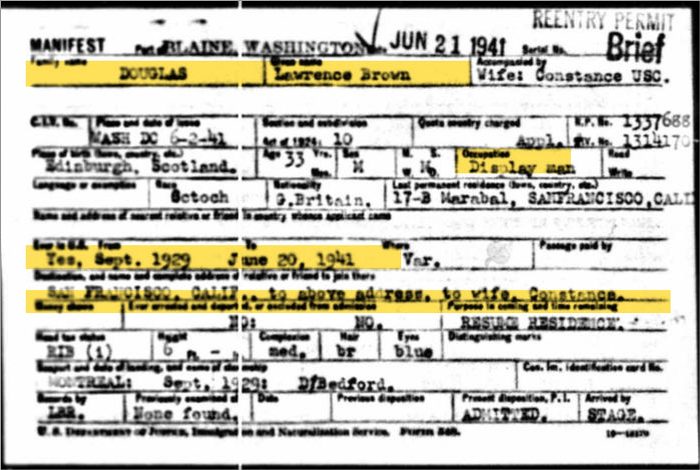

Item 47 · June 21, 1941
Border crossing card: Lawrence Brown Douglas, Blaine
The document

This copy carries yellow highlighting or red outlining added for the book site. It is not on the original.
Tap an image to open it full size.
Transcription, word for word
Everything as written, including misspellings. [?] marks an uncertain reading. Struck-through words are marked as struck through. Notes in square brackets describe the page and are not part of it.
[Stamped, top right] REENTRY PERMIT [Typed, large] Brief MANIFEST. Port of BLAINE, WASHINGTON [a large tick] Date: JUN 21 1941. Serial No.: [blank] Family name: DOUGLAS. Given name: Lawrence Brown. Accompanied by: Wife: Constance USC. C.I.V. No.: [blank]. Place and date of issue: WASH DC 6-2-41. Section and subdivision, Act of 1924: 10. Quota country charged: [blank]. Appl.[?] R.P. No. 1337688[?]. E.V. No. 1314170[?] Place of birth (town, country, etc.): Edinburgh, Scotland. Age: 33 Yrs. Mos. Sex: M. M. S. W. D.: M. Occupation: Display man. Read: [blank] Write: [blank] Language or exemption: [blank]. Race: Scotch. Nationality: G.Britain. Last permanent residence (town, country, etc.): 17-B Marabal[?], SANFRANCISCO,CALI[F — cut off] Name and address of nearest relative or friend in country whence applicant came: [blank] Ever in U.S.: Yes, From Sept. 1929 To June 20, 1941. Where: Var. Passage paid by: [blank] Destination, and name and complete address of relative or friend to join there: SAN FRANCISCO, CALIF., to above address, to wife, Constance. Money shown: [blank]. Ever arrested and deported, or excluded from admission: NO: NO. Purpose in coming and time remaining: RESUME RESIDENCE. Head tax status: RIB (1). Height: 6 ft. – in. Complexion: med. Hair: br. Eyes: blue. Distinguishing marks: [blank] Seaport and date of landing, and name of the ship: MONTREAL: Sept, 1929: D/Bedford. Can. Im. identification card No.: [blank] Records by: LBR[?]. Previously examined at: None found. Date: [blank]. Previous disposition: [blank]. Present disposition, P.I.: ADMITTED. Arrived by: STAGE. [Printed, bottom] U. S. Department of Justice, Immigration and Naturalization Service. Form 548. 16—18179[?]